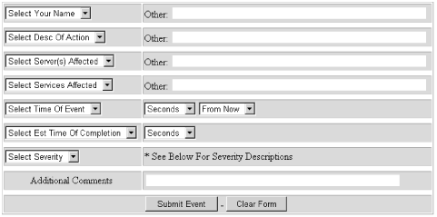

B.4. Using NNM for Communications
One of the more exotic ways to use SNMP
is as a tool for passing messages back and forth. For example,
it's certainly useful to know that the Oracle database has gone
down, but it's even more useful to send messages to key users
notifying them that the database has crashed or that it's going
down for maintenance at the end of the day. In a small environment,
it's easy to come up with hacks that provide various kinds of
notification. But in a large company with many offices, it's
useful to have a standard way for communicating with other
departments. NNM's Event Categories is the perfect tool to use
as a centralized communication device.
Imagine a web interface that allows you to
send traps to Event Categories. Filling out a simple form in a
browser automatically generates a trap that is posted to the
appropriate categories. Figure B-3 shows such an
interface.

Figure B-3. SNMP web interface
What types of questions does everyone (you, managers, users, etc.)
ask when there's a problem? The most typical ones are:
Who is in charge? Name, phone, pager
What is going on? Reboot, upgrade, failure
What servers are affected? Production, test, development
What services are affected? Mail, news, database, web server
When did this happen? E.g., 10 minutes ago, 4 days from now
When will this be fixed? E.g., immediately, tomorrow
What is the severity? Normal, Warning, Minor, Major, Critical
All these questions can be answered
using the HTML form in Figure B-3. The CGI script
or Java servlet that processes the form can refuse to accept the form
until the user has filled in all the fields, guaranteeing that you
have complete and consistent information.
Setting up a reporting system like this
is not very difficult. You can use any standard web server,[78] a little HTML, and
your favorite language for processing the form. Once you parse the
output from the form, you can use any of the trap-generation programs
we've discussed to send the trap. This trap will then show up
in one of NNM's Event Categories. (If you're not using
NNM, we've discussed other trap daemons that can be used to
receive the trap and notify users. However, NNM is convenient because
it will do everything for you.)
The key to this whole setup is getting people to use and watch NNM.
If it isn't used by everyone, this mechanism really
doesn't accomplish anything. Training users in nontechnical
departments to watch NNM for important notifications may not be easy,
but if you succeed you'll have created an elegant mechanism for
getting important information to users.
 |  |  |
| B.3. Profiles for Different Users |  | C. Net-SNMP Tools |

Copyright © 2002 O'Reilly & Associates. All rights reserved.